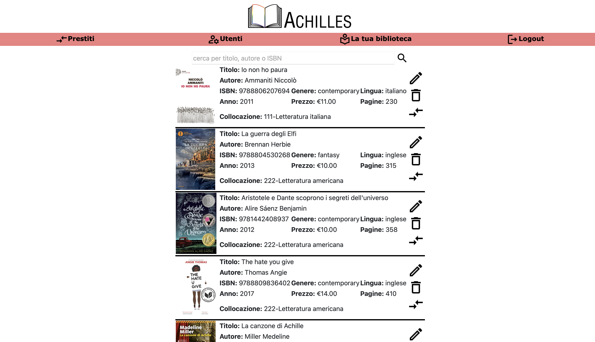

Achilles
This project was presented ad the final exams for the diploma in Computer Science at the IIS Einaudi-Scarpa in th school year 2020/2021. It was completed between May and June 2023, presented at the exams on June 19, with a final grade of 100/100.
The project aim was to create a web-based service to manage the data and activities of a library, with the potential to connect with other libraries in the region. The project was inspired by an internship experience and gained insights into library management systems.
Key Highlights
- Objective: The creation of a simple and intuitive web interface that allows library staff to manage the catalog, user registrations, and book loans efficiently. Users can view their loan status and modify their profiles.
- Database Design: The database stores information about books, users, and loan history. The data model includes entities like
User,Book,Library, and relationships such asLoansandAuthors. Security measures like user role distinctions and data encryption are implemented. - Network Infrastructure: The network design includes separate VLANs for library staff and users, a secure VPN connection for inter-library communication, and an Access Point for public Wi-Fi. The infrastructure emphasizes security, with measures like ACLs, NAT, and IPsec VPNs.
- Implementation: The project includes creating a database, web interface (with functionalities like book search and loan management), and network setup. PHP was used to develop the web application, with features like user authentication, session management, and PDF generation for loan summaries.
- Challenges and Learning: I faced challenges with the complexity of the database design and network infrastructure, which required more time than anticipated. Despite this, the project was successfully completed, providing valuable experience in both software development and network configuration.
Tools Used
- Software Development: Visual Studio Code, XAMPP (for PHP development)
- Project Management: Gantt Project
- Network Simulation: Cisco Packet Tracer
To download the documentation: ACHILLES.pdf 
For the GitHub repository: ACHILLES